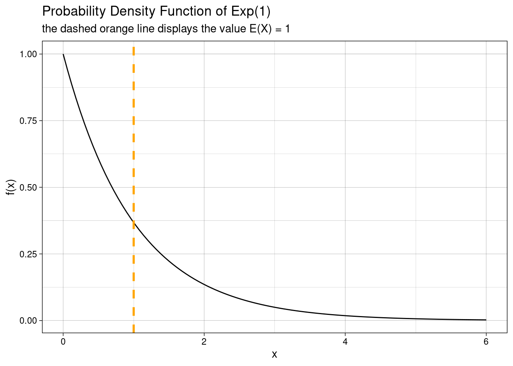
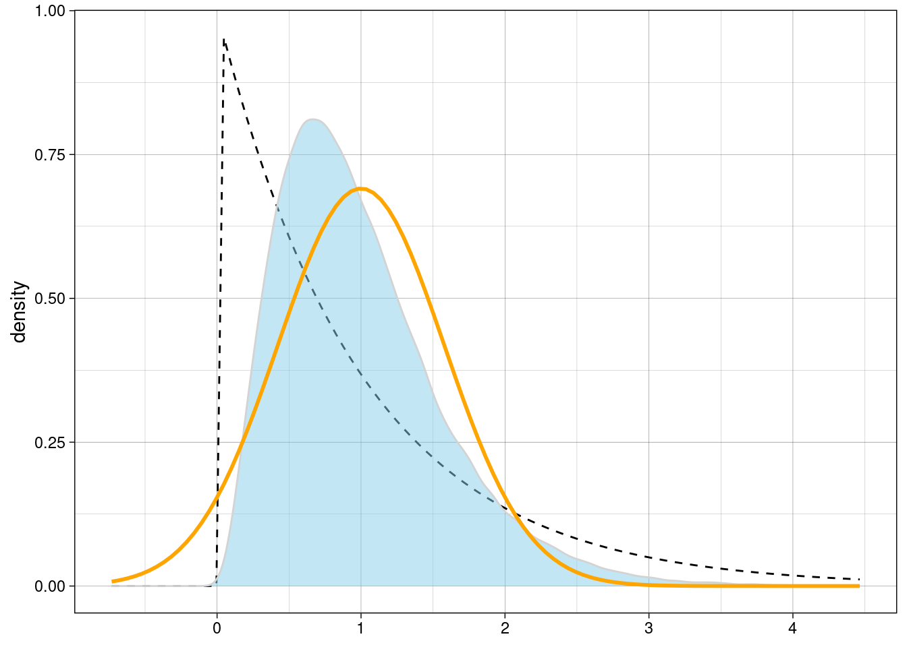
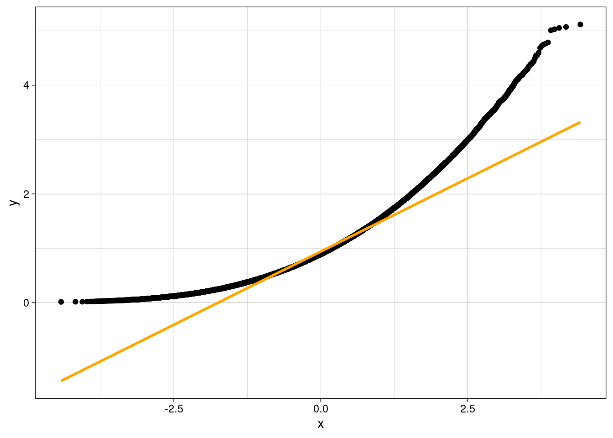
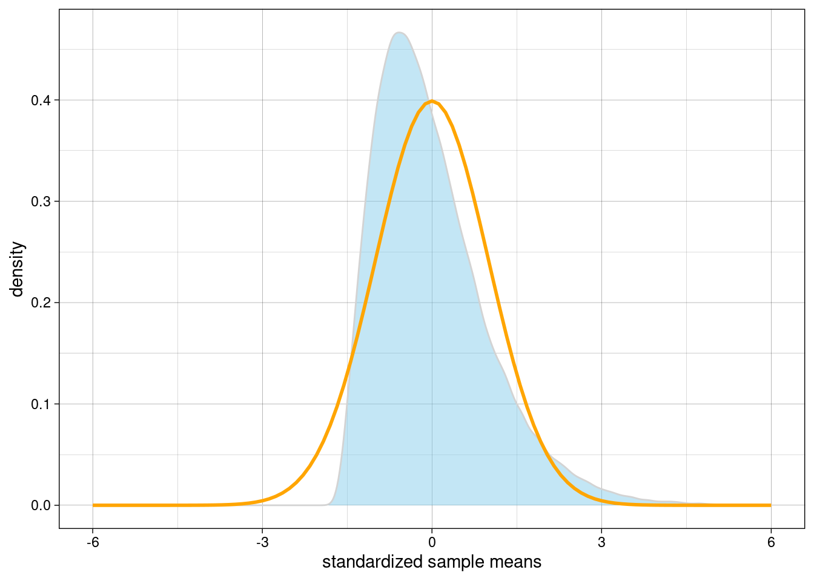
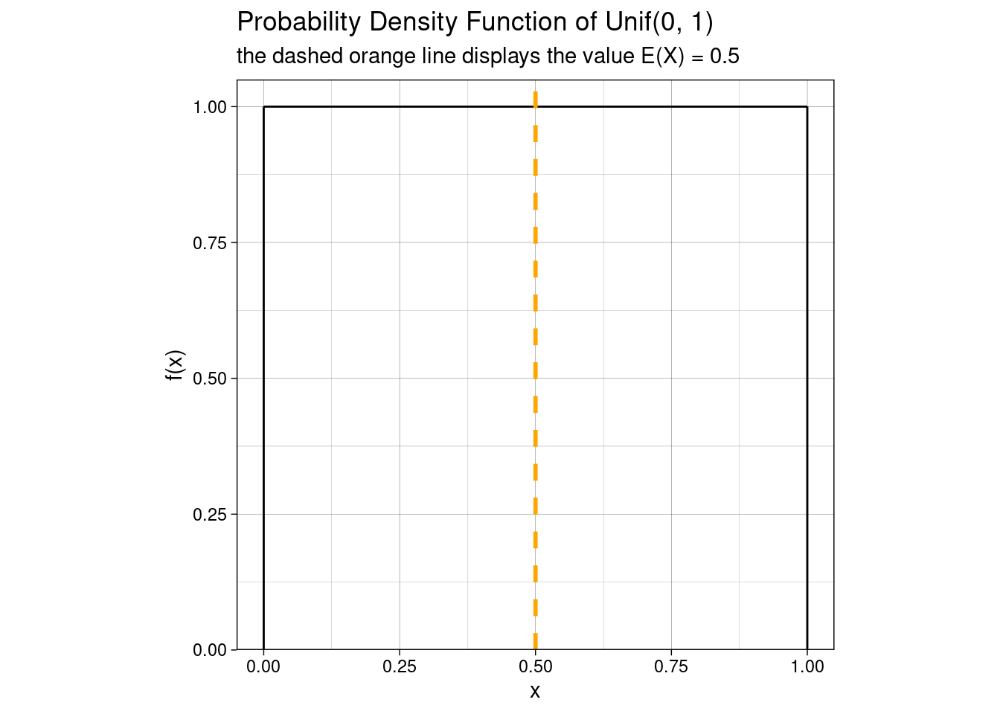
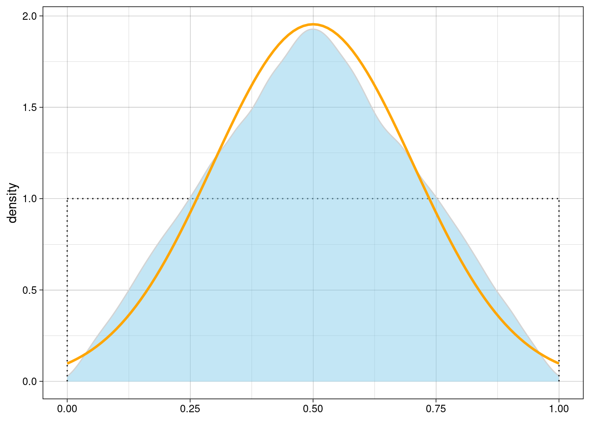
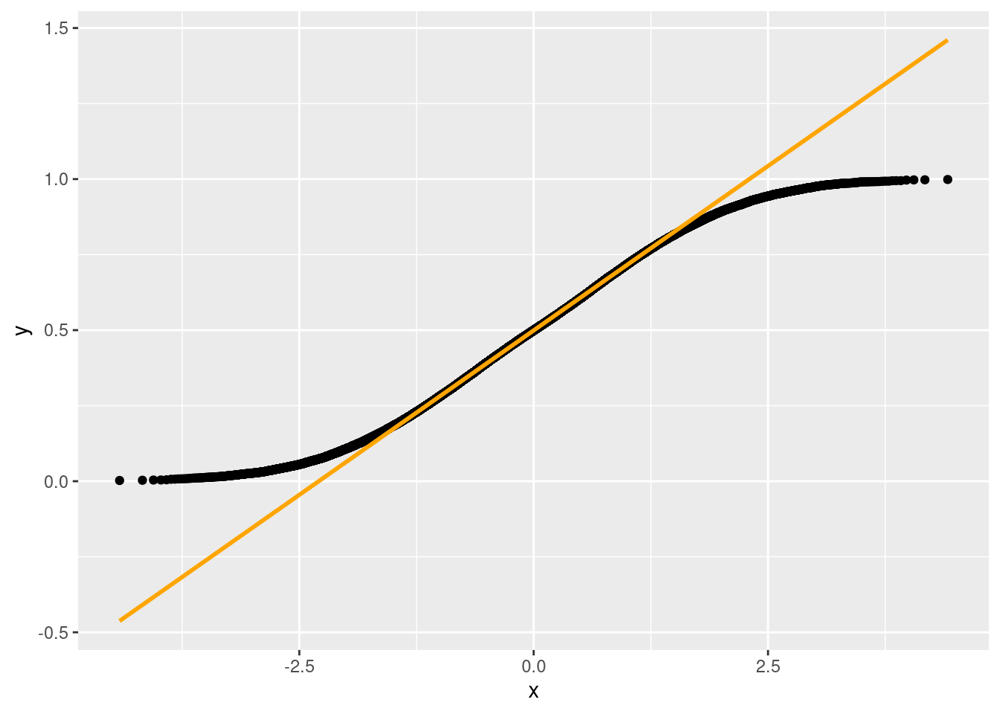
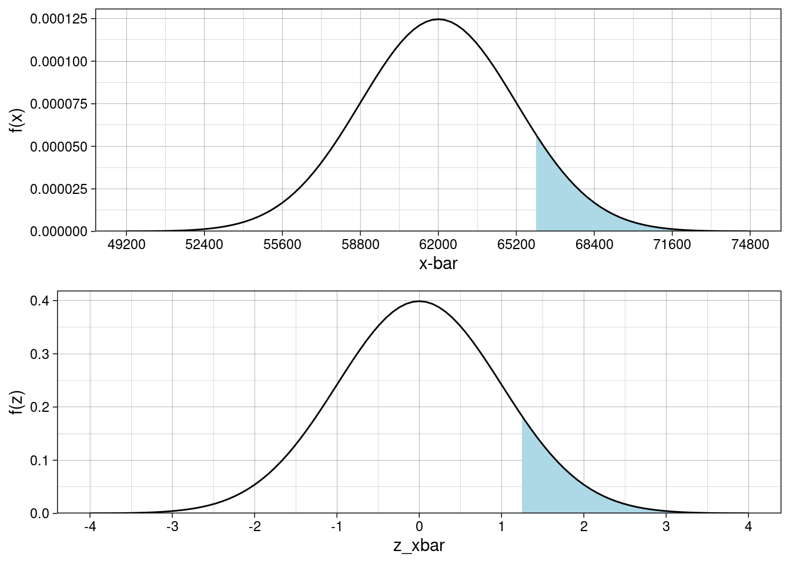

Introduction to the Central Limit Theorem
Companion R Code for JB Statistics Video Lesson
Created by Jill E. Thomley
Sunday, September 26, 2021 @ 04:59 PM
Packages Used
library(tidyverse)
library(gridExtra)Explore the Central Limit Theorem
The Exponential Distribution
The exponential distribution has a single parameter \(\lambda\), which is the rate of the exponential decay. The larger the value of \(\lambda\), the quicker the decrease in the height of the curve. For X ~ Exp(\(\lambda\)), the mean and standard deviation are \(\mu\) = \(\frac{1}{\lambda}\) and \(\sigma = \frac{1}{\lambda}\). Thus, for Exp(1), both the mean and standard deviation are 1. You can change the value of \(\lambda\) in the plot below to any real number greater than zero to visualize the shape of other exponential distributions.
lambda <- 1
exp_plot <- ggplot() +
stat_function(
fun = dexp,
args = list(lambda),
xlim = c(0, 6 / lambda)
) +
geom_vline(
xintercept = 1 / lambda,
color = "orange",
linetype = "dashed",
size = 1
) +
labs(
title = paste("Probability Density Function of Exp(", lambda, ")", sep = ""),
subtitle = paste("the dashed orange line displays the value E(X) = ", 1 / lambda, sep = ""),
x = "x",
y = "f(x)"
) +
theme_linedraw()exp_plot
How does the shape of the sampling distribution of \(\bar{X}\) compare? We will first explore this via simulation. Instead of histograms as in the video, we will use density plots, but the principle is the same. We will also include a QQ plot to assess normality. Change the value of \(n\) below and observe what happens. You can also experiment with different values of \(\lambda\). How large does \(n\) have to be to make the sampling distribution of \(\bar{X}\) look approximately normal to you? Is the rough guideline of 30 enough here?
lambda <- 1
n <- 3
mu <- 1 / lambda
sigma <- 1 / lambda
sigma_xbar <- sigma / sqrt(n)
sims <- 10^5
samplemeans <- numeric(sims) # create storage vector
for (i in 1:sims) {
samplemeans[i] <- mean(rexp(n, lambda))
}
# the black dashed curve is the exponential population
# the blue curve is the simulated sampling distribution
# the heavy orange curve is a normal distribution, with
# mean mu and SD sigma_xbar, used as a visual reference
# --how do the shapes of these three densities compare?
simresults <- tibble(samplemeans)
sim_plot_exp <- ggplot(simresults) +
stat_function(
fun = dexp,
args = list(lambda),
linetype = "dashed"
) +
geom_density(aes(x = samplemeans),
color = "lightgray",
fill = "skyblue",
alpha = 0.5
) +
stat_function(
fun = dnorm,
args = list(mu, sigma_xbar),
color = "orange",
size = 1
) +
scale_x_continuous(limits = c(mu - 3 * sigma_xbar, mu + 6 * sigma_xbar)) +
labs(x = NULL, y = "density") +
theme_linedraw()sim_plot_exp
It can be difficult to judge normality using density plots, so we have a plot that is more specifically geared for assessing normality. It is called a normal quantile-quantile plot, or QQ plot. The plot compares the data to a normal model that has the same mean and standard deviation to see if the percentiles match up. Since samplemeans is a vector, we enter NULL for the dataset.
ggplot(NULL, aes(sample = samplemeans)) +
geom_qq() +
geom_qq_line(
color = "orange",
size = 1
) +
theme_linedraw()
Data from a perfectly normal distribution theoretically follow the straight line. We will never see this in samples, which always have some variability. Data from an approximately normal distribution will tend to be clustered around the straight line (with random deviations). Data that are right skewed like these will tend to be curved upward.
zscores <- (samplemeans - mean(samplemeans)) / sd(samplemeans)
sim_plot_exp_z <- ggplot() +
geom_density(aes(x = zscores),
color = "lightgray",
fill = "skyblue",
alpha = 0.5
) +
stat_function(
fun = dnorm,
args = list(0, 1),
color = "orange",
size = 1
) +
scale_x_continuous(limits = c(-6, 6)) +
labs(
x = "standardized sample means",
y = "density"
) +
theme_linedraw()sim_plot_exp_z
The Uniform Distribution
\[f(x) = \frac{1}{b - a}\]
The uniform distribution X ~ Unif(\(a, b\)) has a “rectangular” shape with two parameters, which are the upper and lower boundaries of possible values. The uniform distribution with \(a\) = 0 and \(b\) = 1 is the standard uniform distribution (the plot is a unit square). A uniform distribution can have any real values for \(a\) and \(b\), where \(b > a\). You can experiment with other values in the plot below as long as \(b - a \geq 1\) (due to the y-axis scaling).
a <- 0
b <- 1
unif_plot <- ggplot() +
stat_function(
fun = dunif,
args = list(a, b),
xlim = c(a, b)
) +
geom_vline(
xintercept = (b - a) / 2,
color = "orange",
linetype = "dashed",
size = 1
) +
geom_segment(aes(
x = c(a, b),
xend = c(a, b),
y = c(0, 0),
yend = c(1 / (b - a), 1 / (b - a))
)) +
labs(
title = paste("Probability Density Function of Unif(", a, ", ", b, ")", sep = ""),
subtitle = paste("the dashed orange line displays the value E(X) = ", (b - a) / 2, sep = ""),
x = "x",
y = "f(x)"
) +
scale_y_continuous(
limits = c(0, 1),
expand = expansion(mult = c(0, 0.05))
) +
theme_linedraw() +
coord_fixed() # makes the x and y axes have the same spacingunif_plot
How does the shape of the sampling distribution of \(\bar{X}\) compare when we start with a symmetric distribution versus the right skew we had above? How large does \(n\) have to be to make the sampling distribution of \(\bar{X}\) look approximately normal to you?
a <- 0
b <- 1
n <- 2
mu <- (b - a) / 2
sigma <- sqrt((a - b)^2 / 12)
sigma_xbar <- sigma / sqrt(n)
sims <- 10^5
samplemeans <- numeric(sims)
for (i in 1:sims) {
samplemeans[i] <- mean(runif(n, a, b))
}
# the black dotted curve is the exponential population
# the blue curve is the simulated sampling distribution
# the heavy red curve is a normal distribution, mean mu
# and standard deviation sigma_xbar, used for reference
# --how do the shapes of these three densities compare?
sim_plot_unif <- ggplot() +
stat_function(
fun = dunif,
args = list(a, b),
xlim = c(a, b),
linetype = "dotted"
) +
geom_density(aes(x = samplemeans),
color = "lightgray",
fill = "skyblue",
alpha = 0.5
) +
stat_function(
fun = dnorm,
args = list(mu, sigma_xbar),
color = "orange",
size = 1
) +
geom_segment(aes(
x = c(a, b),
xend = c(a, b),
y = c(0, 0),
yend = c(1 / (b - a), 1 / (b - a))
),
linetype = "dotted"
) +
labs(x = NULL, y = "density") +
theme_linedraw()sim_plot_unif
Again we assess normality using the normal quantile-quantile plot.
ggplot(NULL, aes(sample = samplemeans)) +
geom_qq() +
geom_qq_line(
color = "orange",
size = 1
)
As we saw above with the exponential distribution, data that are right skewed will tend to be curved upward on a QQ plot. Data that are platykurtic like the uniform distribution will tend to have a logistic shape on a QQ plot, as seen here.
Notice that this code is identical to what we used for the exponential distribution. That is one benefit of using standardized scores.
zscores <- (samplemeans - mean(samplemeans)) / sd(samplemeans)
sim_plot_unif_z <- ggplot() +
geom_density(aes(x = zscores),
color = "lightgray",
fill = "skyblue",
alpha = 0.5
) +
stat_function(
fun = dnorm,
args = list(0, 1),
color = "orange",
size = 1
) +
scale_x_continuous(limits = c(-6, 6)) +
labs(
x = "standardized sample means",
y = "density"
) +
theme_linedraw()Mean Salary Example
Salaries are generally right skewed. That should make sense if you think about it. There is a natural lower boundary of zero with the majority of individuals having salaries relatively near the lower end of the number line. A smaller number of individuals make somewhat larger amounts of money, with an even smaller number making an exceptionally large amount of money, as shown in the plot below of US Household Income. Therefore, we cannot use a normal model to compute probabilities for individual salaries, even if we know the mean and standard deviation. However, we can for the mean salary of a sufficiently large sample thanks to the Central Limit Theorem.

mu <- 62000
sigma <- 32000
n <- 100
x_bar <- 66000
sigma_xbar <- sigma / sqrt(n)
pnorm(x_bar, mu, sigma_xbar, lower.tail = FALSE)[1] 0.1056498z_xbar <- (x_bar - mu) / sigma_xbar
pnorm(z_xbar, lower.tail = FALSE)[1] 0.1056498LB <- mu - 4 * sigma_xbar # lower limit for plotting
UB <- mu + 4 * sigma_xbar # upper limit for plotting
plotXbar <- ggplot() +
stat_function(
fun = dnorm,
args = list(mu, sigma_xbar),
geom = "area",
xlim = c(x_bar, UB),
fill = "lightblue"
) +
stat_function(
fun = dnorm,
args = list(mu, sigma_xbar)
) +
scale_x_continuous(
limits = c(LB, UB),
breaks = seq(from = LB, to = UB, by = sigma_xbar)
) +
scale_y_continuous(expand = expansion(mult = c(0, 0.05))) +
labs(x = "x-bar", y = "f(x)") +
theme_linedraw()
plotZbar <- ggplot() +
stat_function(
fun = dnorm,
args = list(0, 1),
geom = "area",
xlim = c(z_xbar, 4),
fill = "lightblue"
) +
stat_function(
fun = dnorm,
args = list(0, 1)
) +
scale_x_continuous(
limits = c(-4, 4),
breaks = seq(from = -4, to = 4, by = 1)
) +
scale_y_continuous(expand = expansion(mult = c(0, 0.05))) +
labs(x = "z_xbar", y = "f(z)") +
theme_linedraw()grid.arrange(plotXbar, plotZbar)
sessionInfo()R version 3.6.0 (2019-04-26)
Platform: x86_64-redhat-linux-gnu (64-bit)
Running under: Red Hat Enterprise Linux
Matrix products: default
BLAS/LAPACK: /usr/lib64/R/lib/libRblas.so
locale:
[1] LC_CTYPE=en_US.UTF-8 LC_NUMERIC=C
[3] LC_TIME=en_US.UTF-8 LC_COLLATE=en_US.UTF-8
[5] LC_MONETARY=en_US.UTF-8 LC_MESSAGES=en_US.UTF-8
[7] LC_PAPER=en_US.UTF-8 LC_NAME=C
[9] LC_ADDRESS=C LC_TELEPHONE=C
[11] LC_MEASUREMENT=en_US.UTF-8 LC_IDENTIFICATION=C
attached base packages:
[1] stats graphics grDevices utils datasets methods base
other attached packages:
[1] gridExtra_2.3 forcats_0.5.1 stringr_1.4.0 dplyr_1.0.7
[5] purrr_0.3.4 readr_2.0.1 tidyr_1.1.3 tibble_3.1.4
[9] ggplot2_3.3.5 tidyverse_1.3.1
loaded via a namespace (and not attached):
[1] tidyselect_1.1.1 xfun_0.26 bslib_0.3.0 haven_2.4.3
[5] colorspace_2.0-2 vctrs_0.3.8 generics_0.1.0 htmltools_0.5.2
[9] yaml_2.2.1 utf8_1.2.2 rlang_0.4.11 jquerylib_0.1.4
[13] pillar_1.6.2 withr_2.4.2 glue_1.4.2 DBI_1.1.1
[17] dbplyr_2.1.1 modelr_0.1.8 readxl_1.3.1 lifecycle_1.0.0
[21] munsell_0.5.0 gtable_0.3.0 cellranger_1.1.0 rvest_1.0.1
[25] evaluate_0.14 labeling_0.4.2 knitr_1.34 tzdb_0.1.2
[29] fastmap_1.1.0 fansi_0.5.0 highr_0.9 broom_0.7.9
[33] Rcpp_1.0.7 backports_1.2.1 scales_1.1.1 jsonlite_1.7.2
[37] farver_2.1.0 fs_1.5.0 hms_1.1.0 digest_0.6.27
[41] stringi_1.7.4 grid_3.6.0 cli_3.0.1 tools_3.6.0
[45] magrittr_2.0.1 sass_0.4.0 crayon_1.4.1 pkgconfig_2.0.3
[49] ellipsis_0.3.2 xml2_1.3.2 reprex_2.0.1 lubridate_1.7.10
[53] rstudioapi_0.13 assertthat_0.2.1 rmarkdown_2.11 httr_1.4.2
[57] R6_2.5.1 compiler_3.6.0